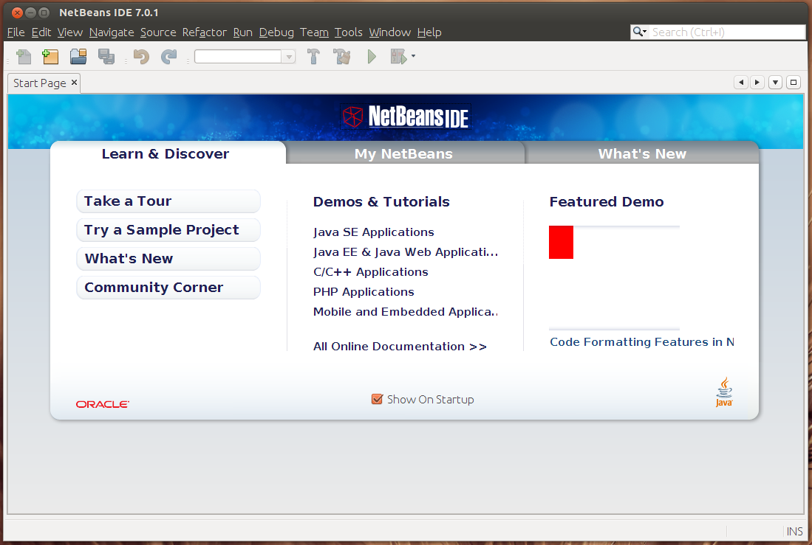
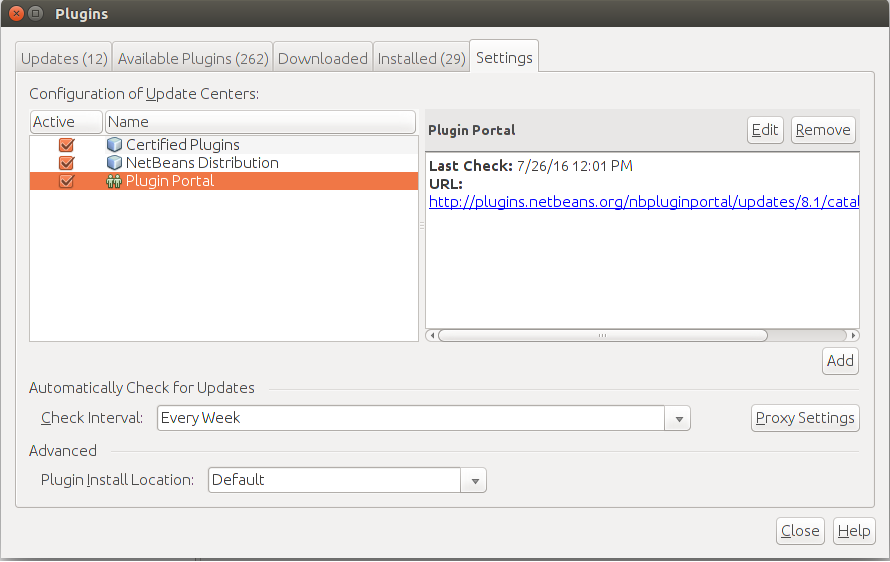
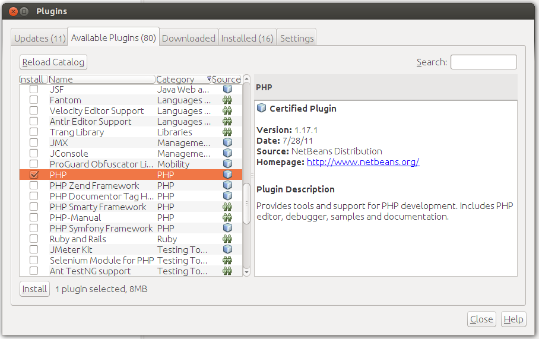

Installing NetBeans IDE in Linux
You can install NetBeans IDE using two methods: either from repository, as you did with Apache, PHP and MySQL, or by downloading the installer from NetBeans web site and running it. The first method is simpler, so we recommend to use it.
To install NetBeans IDE in Debian or Linux Ubuntu, type the following command from your command shell:
sudo apt-get install netbeans
or the following command to install it in Fedora, CentOS or Red Hat Linux:
sudo yum install netbeans
The command above downloads from repository and installs NetBeans and all its dependent packages. After the installation is complete, you can run netbeans by typing:
netbeans
The NetBeans IDE window is shown in figure A.6.
 Figure A.6. NetBeans IDE
To be able to create PHP projects, you need to activate PHP plugin for NetBeans. To do that,
open menu Tools->Plugins, the Plugins dialog appears. In the appeared dialog, click
Settings tab and set check marks to all Update Centers (see the figure A.7).
 Figure A.7. NetBeans Plugins
Then click the Available Plugins tab. On that tab, click the Check for Newest button to build the list of all available plugins. Then in the list, set check mark to PHP plugin and click the Install button (see the figure A.8).
 Figure A.8. NetBeans Plugins
When the PHP plugin installation is complete, restart the IDE.
Then you should be able to create new PHP projects
from menu New->New Project....
It is also recommended to update NetBeans IDE to the latest version by opening menu
Help->Check for updates.